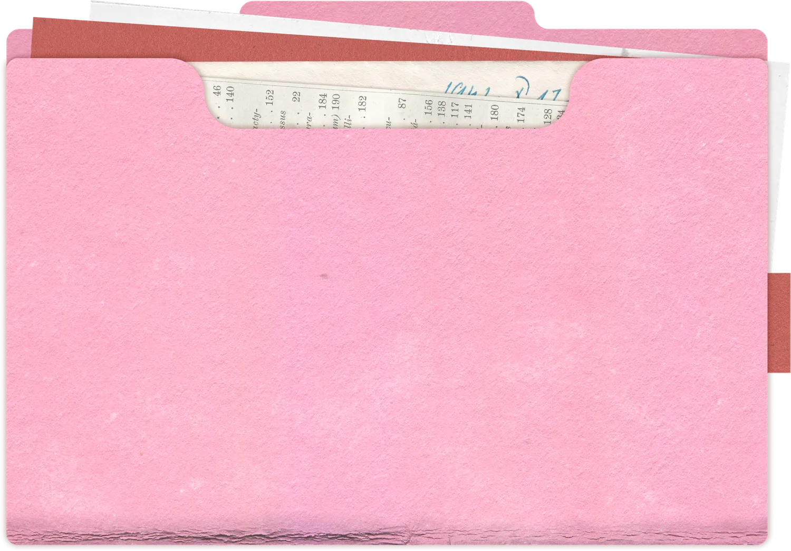
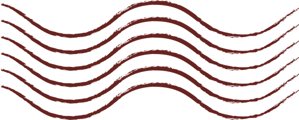
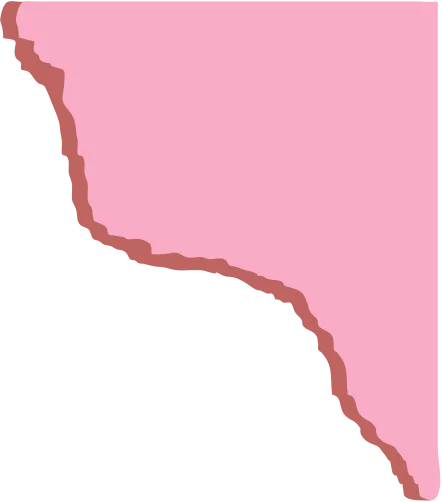
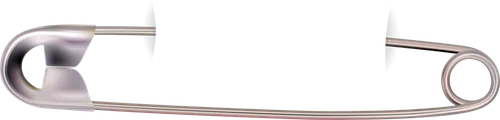
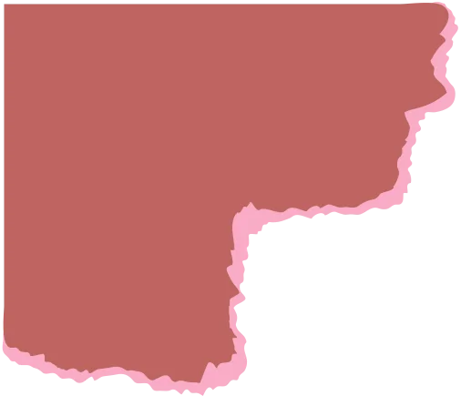
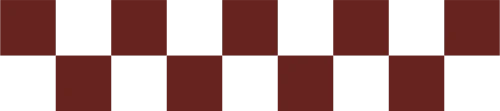

Creative
Communications
Communications
Creative Portfolio

Social Media✦Jeep✦Digital Campaigns✦Alfa Romeo✦Event Coverage✦Fiat✦Public Relations✦Nespresso✦Visual Content✦USAID✦Content Calendars✦AUC — A2K4D✦Influencer Collaborations✦Gracias Latin Kitchen✦Press Releases✦Select Jewelry✦
0
Featured projects
0
Brands & organisations
0
Industries
0
Core services

01 — Who I am
About

I’m a communications and digital content professional with experience across public relations, academic institutions, and the food & beverage industry.
My work combines strategic communication with creative execution, from developing content calendars and managing social media platforms to creating campaigns, covering events, and turning complex ideas into accessible digital content.
02 — Creative perspective
Good communication starts with a clear message.
I focus on transforming ideas, research, campaigns, and brand stories into content that people can easily understand and connect with.
From a social media post to a large-scale event, I pay attention to the message, audience, visual direction, timing, and overall experience making sure every piece of content has a purpose.
- Message
- Audience
- Visual direction
- Timing
- Experience
03 — Services
What I Create
04 — How I work
Execution
Process
- 01
Understand
The objective, audience, message, and platform.
- 02
Plan
Build the content direction, calendar, timeline, and required assets.
- 03
Create
Develop the copy, visuals, reels, stories, and campaign materials.
- 04
Execute
Publish, coordinate, cover, monitor, and adapt content across platforms.
- 05
Evaluate
Review performance, audience response, and opportunities for improvement.

05 — Selected work
Work Portfolio
Hover to preview · click to watch with sound
06 — Experience
Experience Across Industries
Working across different industries has allowed me to understand different audiences, brands, and communication needs.
07 — More than social media
Beyond Content Creation

01. Social Media Management
- Managing multiple social media accounts
- Developing content calendars and publishing schedules
- Community management and audience engagement
- Monitoring performance and reporting
02. Campaigns & Marketing
- Campaign planning and execution
- Promotional strategies and brand awareness
- Influencer collaborations
- Paid content boosting and trend research
03. Public Relations
- Press releases and media communication
- Client proposals and reports
- Media monitoring and brand positioning
- Client and stakeholder coordination